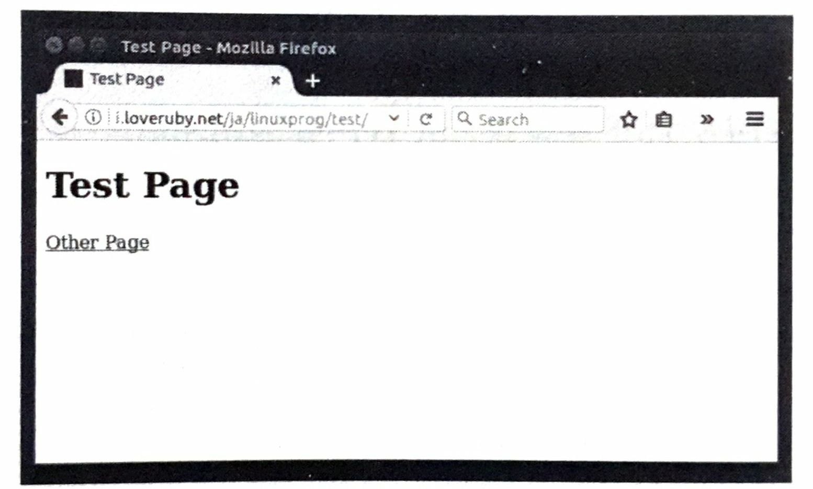
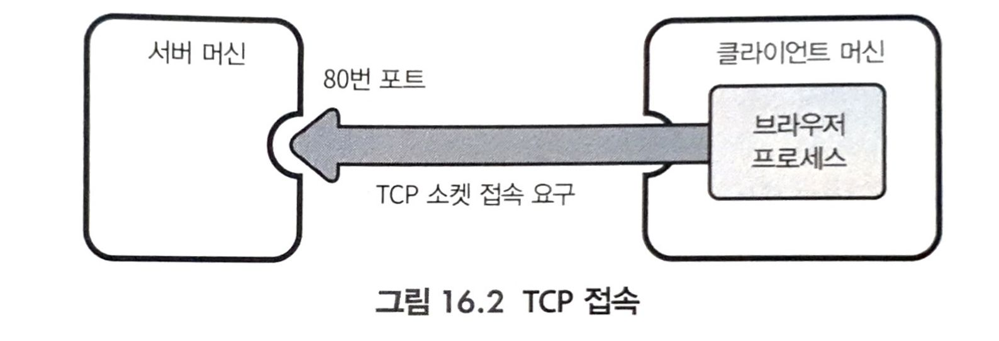
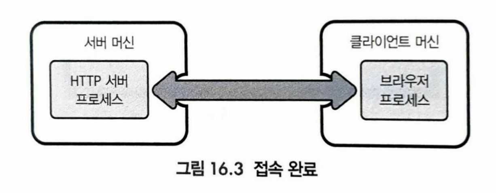
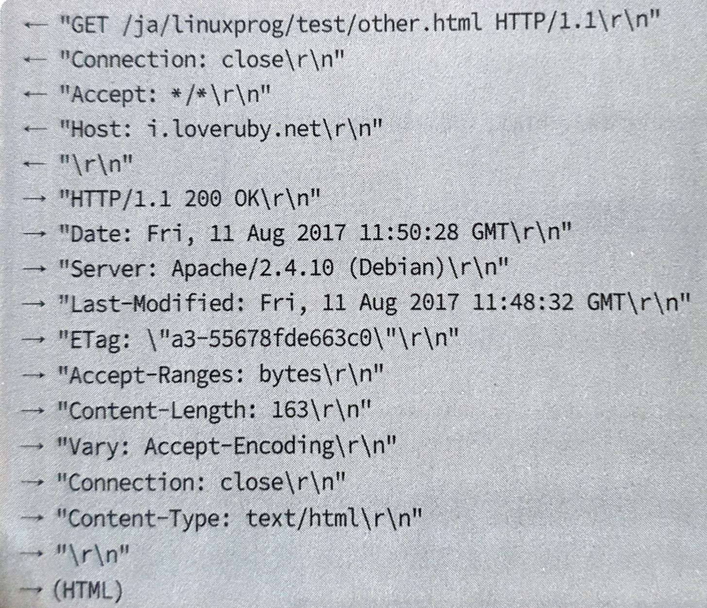
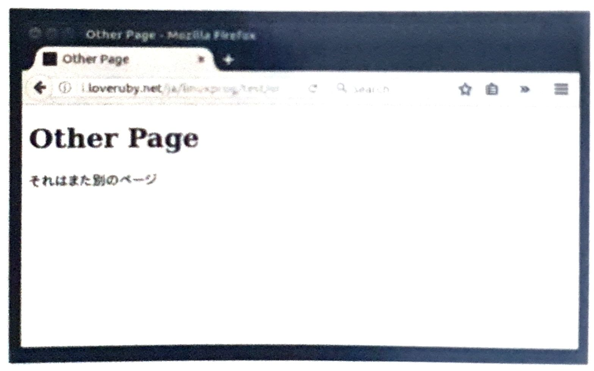
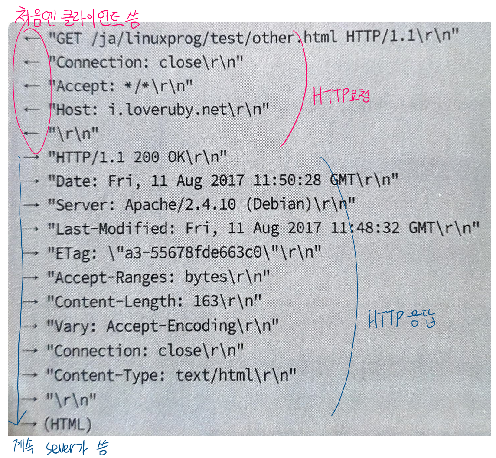
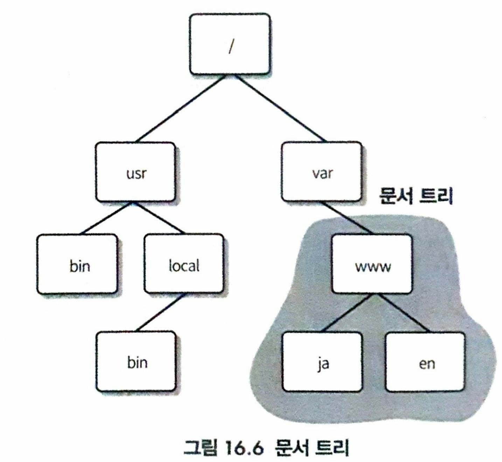

WWW와 HTTP
HTTP 1.1
- HTTP(HyperText Transfer Protocol): 브라우저가 서버로부터 HTML 문서나 이미지를 요청하고 받아들일 때 사용하는 프로토콜
- HTTP서버는 HTML 문서, 이미지를 제공해주는 SW
- 유명한 http 서버로는 Apache, Nginx, IIS(microsoft)
- 현재는 차세대 HTTP로 HTTP/2가 등장
WWW

- 웹 브라우저(index.html)
- 웹 페이지는 HTML로 작성
- 위 페이지(index.html)의 코드는 아래와 같다.
<!DOCTYPE html>
<html lang="ja-JP">
<head>
<title>Test Page</title>
</head>
<body>
<h1>Test Page</h1>
<p><a href="other.html">Other Page</a></p> # "Other Page텍스트와 other.html에 하이퍼링크 연결 코드"
</body>
</html>
- 이 페이지의 Other Page텍스트는 other.html에 하이퍼링크로 연결
- href로 지정한 주소가 상대 URL(relative URL)로 표시되었으므로 서버(호스트), 포트, 디렉터리 경로는 현재 표시중인 페이지와 동일하다고 판단.
- 웹 브라우저는 index.html과 동일한 서버, 동일한 포트에 TCP 소켓을 연결하여 통신 시도

- TCP 접속이 완료되면 HTTP 서버 프로세스와 HTTP 클라이언트 프로세스(웹 브라우저)의 사이에 스트림이 연결된다.

- 이 스트림을 통해 브라우저와 HTTP서버가 아래 코드처럼 정보 교환한다.
- ‘→’ 서버로 부터 클라이언트로 보내는 데이터, ‘←’ 클라이언트로 부터 서버로 보내는 데이터

<!DOCTYPE html>
<html lang="ja-JP">
<head>
<meta http-equiv="Content-Type" content="text/html; charset=utf-8">
<title>Other Page</title>
</head>
<body>
<h1>Other Page</h1>
<p>또다른 페이지</p>
</body>
</html>

- 브라우저는 렌더링해서 위와같은 화면(other.html)을 표시한다.
- 이미지나 CSS 파일도 이와 같은 방식으로 획득하여 표시한다.
HTTP
- 위에서 WWW가 대략적 구조가 이해되었다면, HTTP의 내용을 좀더 자세히 살펴보자. 
- 처음에 client가 쓰는 HTTP 요청
- 그다음 server가 쓰는 HTTP 응답
- 요청 -> 응답의 반복이 HTTP
HTTP 요청
"GET /ja/linuxprog/test/other.html HTTP/1.1\r\n" # 1)
"Connection: close\r\n" # 2)
"Accept: */*\r\n"
"Host: i.loveruby.net\r\n"
"\r\n"
- 1) 요청라인(request line)
- GET : 데이터가 필요하다.
- /ja/linuxprog/test/other.html : 데이터의 경로
- HTTP/1.1 : HTTP 1.1 버전이다.
- 2) HTTP 헤더 : 부가적인 정보, '항목명: 값'의 형태로 부가적인 정보가 기재
- “Connection: close” : 응답 후 TCP 연결을 끊어달라
- “Accpet: */*“ : 어떤 종류의 데이터라도 받겠다.
- "\r\n" : 끝(개행문자 CR LF)
HTTP 응답
"HTTP/1.1 200 OK\r\n" # 1)
"Date: Fri, 11 Aug 2017 11:50:28 GMT\r\n" # 2)
"Server: Apache/2.4.10 (Debian)\r\n"
"Last-Modified: Fri, 11 Aug 2017 11:48:32 GMT\r\n"
"ETag: \"a3-55678fde663c0\"\r\n"
"Accept-Ranges: bytes\r\n"
"Content-Length: 163\r\n"
"Vary: Accept-Encoding\r\n"
"Connection: close\r\n"
"Content-Type: text/html\r\n"
"\r\n"
(HTML) # 3)
- 1) 상태 라인: 응답의 결과
- 200 OK : 문제없이 내용을 반환할 수 있다.
- 200 : 문제 없는 결과를 나타내는 상태 코드(status code)
- 이외 상태코드 : ‘404 Not Found’(URL에 대응하는 데이터가 존재하지 않음), ‘403Forbidden’(액세스 권한 없음)
- OK : 사람이 볼 수 있는 보너스 메시지
- 200 : 문제 없는 결과를 나타내는 상태 코드(status code)
- 200 OK : 문제없이 내용을 반환할 수 있다.
- 2) HTTP 헤더 : 응답 자체에 관한 정보나 반환하려는 데이터에 관한 정보
- “Date: Fri, 11 Aug 2017 11:50:28 GMT” : 응답을 반환하는 시간
- “Content-Length: 163” : 반환하려는 데이터 길이가 163Byte
- “\r\n” : 종료
- 3) 엔터티 본문, body : 반환하려는 데이터 자체가 전송
HTTP 정리
- HTTP는 요청과 응답으로 구성
| HTTP 요청 | HTTP 응답 |
|---|---|
| 요청 라인 | 상태 라인 |
| HTTP 헤더 | HTTP 헤더 |
| \r\n | \r\n |
| 엔터티본문 | 엔터티본문 |
- HTTP 요청에서 GET요청 방식은 엔터티 본문을 필요로 하지 않지만, POST 요청 등에서는 엔터티 본문이 붙는다.
- GET 요청 방식 이외
- HEAD 요청: HTTP 헤더만 요구
- POST 요청: 데이터 게시에 사용
- PUT, DELETE …
HTTP 서버 개략
HTTP 서버의 목적
- HTTP의 구조와 파일 시스템이 굉장히 닮음
- URL: 파일 시스템에서의 경로
- GET 명령: cat 명령어
- HEAD 요청: stat():2
- POST 요청: 명령어의 실행
- http://www.example.com/path/to/file.html에 엑세스하면 www.example.com이라는 호스트에 있는 파일
'/ ..../path/to/file.html'에 접근한다. - '
/ ..../' 이 붙는 이유?- 서버의 모든 파일이 웹을 통해 공개되는 것은 곤란하다.
- HTTP 서버의 역할은 HTTP 요청에 대응하는 파일을 문서 루트 밑에서 찾아서 반환하는 것이다.

구현 방침
- 네트워크 접속 부분 생략
- 표준 입력으로 HTTP 요청을 읽어들이고, 그 응답을 표준 출력으로 출력하는 것이다.
- 단말에서 HTTP 요청을 입력하면서 디버그 하기 좋다.
- inetd를 사용하면, 네트워크에 연결할 수도 있다.
에러와 로그
- 에러 발생 시 함수 log_exit() 를 호출하고 종료한다.
/* log_exit() */
static void
log_exit(char *fmt, ...){
va_list ap;
va_start(ap, fmt);
vfprintf(stderr, fmt, ap);
fputc('\n', stderr);
va_end(ap);
exit(1);
}
메모리 관리
- 메모리 사용 시 malloc()을 사용하자.
/* xmalloc() */
static void*
xmalloc(size_t sz){
void *p;
p=malloc(sz);
if (!p) log_exit("failed to allocate memory");
return p;
}
시그널 처리
- 네트워크 프로그램에서 소켓 연결은 언제든 갑자기 끊어질 수 있다.
- 소켓이 끊어지면, inetd에서 시작한 경우 시그널 SIGPIPE가 전달된다.
- 시그널을 포착해 exit()하자
/* install_signal_handlers() */
static void
install_signal_handlers(void){
trap_signal(SIGPIPE, signal_exit);
}
static void
trap_signal(int sig, sighandler_t handler){
struct sigaction act;
act.sa_handler = handler;
sigemptyset(&act.sa_mask);
act.sa_flags = SA_RESTART;
if (sigaction(sig, &act, NULL < 0)
log_exit("sigaction() failed: %s", strerror(errno));
}
static void
signal_exit(int sig){
log_exit("exit by signal %d", sig);
}
서비스 개시까지
main()
int
main(int argc, char *argv[]){
if(argc != 2){
fprintf(stderr, "Usage: %s <docroot>\n", argv[0]);
exit(1);
}
install_signal_handlers();
service(stdin, stdout, argv[1]);
exit(0);
}
- 하나의 실행 인자가 필요한데, 문서 루트의 경로이다.
- 경로가 디렉터리 여부 체크는 stat()참고
service()
- HTTP의 동작 구조를 보여 준다.
static void
service(FILE *in, FILE *out, char *docroot){
struct HTTPRequest *req;
req=read_request(in);
respond_to(req, out, docroot);
free_request(req);
}
- FILE *in: HTTP 요청 읽음
- 그 정보를 struct HTTP Request 구조체의 포인터에 저장하고 반환
- respond_to(): HTTP 요청 req에 대한 응답을 두 번째 인자 out 스트림에 써넣는다. 이때 참고할 문서루트가 docroot 다.